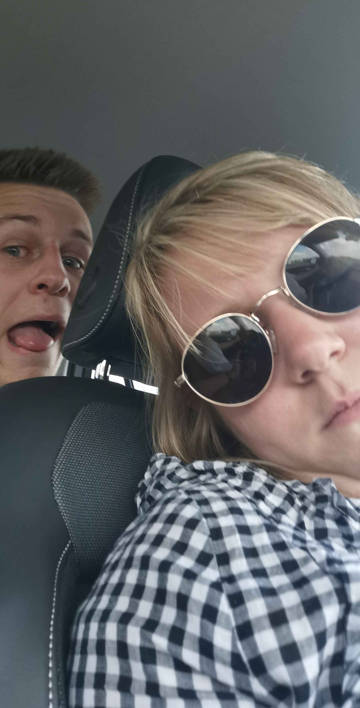

🦆
Code Canard
Entre le code trouvé sur le canard pour découvrir une bêtise d’enfance.
100 canards • 100 souvenirs
🔎 Entrer un code
Astuce : pas sensible à la casse (a1 = A1)
—
Prêt
Quatre visages, un seul mot.
